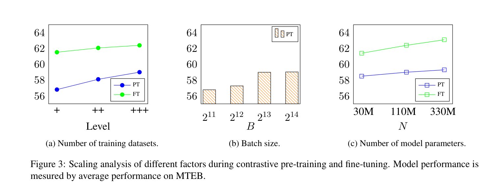
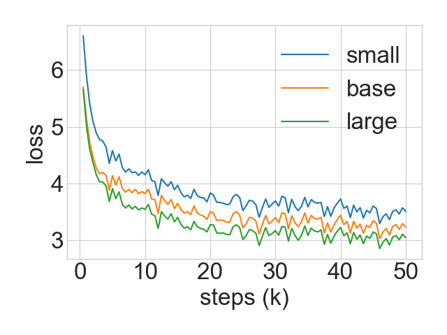
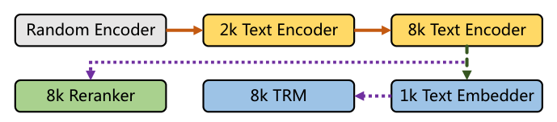
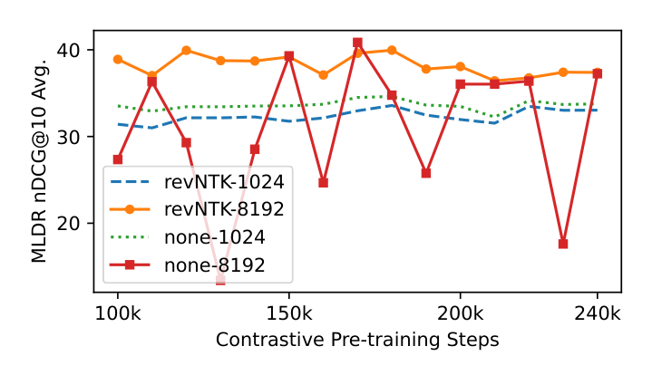

GTE 系列详解：从 BERT 编码器到 gte-v1.5 再到 Qwen2¶
paper: Towards General Text Embeddings with Multi-stage Contrastive Learning（GTE, 2023-08）· mGTE: Generalized Long-Context Text Representation and Reranking Models for Multilingual Text Retrieval（gte-v1.5 / mGTE, 2024-07） code / model: thenlper/gte-large · Alibaba-NLP/gte-large-en-v1.5 · Alibaba-NLP/gte-multilingual-base · Alibaba-NLP/gte-Qwen2-7B-instruct refs: E5 · INSTRUCTOR · BGE-M3 · E5-Mistral · Nomic Embed backbone: BERT（GTE）→ Transformer++ BERT+RoPE+GLU（gte-v1.5 / mGTE）→ Qwen2 Decoder（gte-Qwen2） date: 2023-08 / 2024-06–07 ; modality: 文本 ; languages: 英（GTE）→ 英+75 语（mGTE）→ 中英多语（gte-Qwen2）
本文把阿里 GTE 家族三代写进同一篇：GTE（BERT 多阶段对比）→ gte-v1.5 / mGTE（原生 8K 编码器 + 稀疏/稠密混合）→ gte-Qwen2（Qwen2 双向 LLM 嵌入）。文末有演变对照。
系列定位¶
GTE 想解决的矛盾始终没变：一个向量同时服务非对称检索、对称 STS、分类/聚类。三代换的是骨干、上下文、语言覆盖和检索形态，不是换损失家族——主损失一直是 InfoNCE 对比学习。
| 代 | 产品名 | 论文 | 骨干 | 上下文 | 池化 | 语言 |
|---|---|---|---|---|---|---|
| 1 | thenlper/gte-{small,base,large} |
2308.03281 | BERT / MiniLM | 512 | mean | 英 + 代码当文本 |
| 2 | gte-*-en-v1.5 / gte-multilingual-* |
2407.19669 | Transformer++（RoPE+GLU+unpadding） | 8192 | [CLS] + 稀疏权重 | 英 / 75 语 |
| 3 | gte-Qwen2-{1.5B,7B}-instruct |
无独立论文（方法沿用 GTE + HF 卡） | Qwen2 Decoder | 32K | last-token | 中英多语 |
产品时间线上还有 gte-Qwen1.5-7B-instruct（MTEB ≈67.3 / C-MTEB ≈69.5），是 LLM 线的过渡卡，不是 encoder 的 v1.5。用户口中的 gte-1.5 指的是 *gte--en-v1.5 / mGTE 这篇 2407.19669。
谱系：
SimCSE / DPR（单任务）
→ E5（弱监督对比 + 数据过滤）
→ GTE（全开源、不清洗、双向 InfoNCE、两阶段） ← 第一代
→ mGTE / gte-v1.5（从零训 8K 编码器 + 稠密/稀疏/MRL + reranker） ← 第二代
→ gte-Qwen2（同一对比课表接到 Qwen2 + 双向注意力 + query 指令） ← 第三代
→ Qwen3-Embedding / Conan-v2 / QZhou（后继）
GTE（2023）：多阶段对比学习¶
一句话¶
仅用开源数据、通过两阶段对比学习训练通用文本嵌入：先在约 8 亿弱监督文本对上预训练，再在约 300 万带难负例的三元组上微调。110M 的 GTE_base 超过当时 OpenAI text-embedding-ada-002；330M 的 GTE_large 在当时英文 MTEB 刷新 SOTA。
| 项 | 内容 |
|---|---|
| 骨干 | BERT-small / base / large（30M / 110M / 330M） |
| 池化 | mean pooling |
| 相似度 | 余弦，\(\tau=0.01\) |
| 损失 | 改进双向 InfoNCE（query 与 doc 互为负例） |
| 预训练 | ∼800M 对，max len 128，batch >1 万，50k 步 |
| 微调 | ∼3M 三元组，max len 512，batch 128，group size 16 |
| 数据政策 | 全开源、不做质量清洗（仅精确匹配去重） |
方法总览¶

图解（论文 Figure 1）：左是无监督对比预训练——从 Common Crawl、Wikipedia、Reddit、StackOverflow、StackExchange、arXiv、Semantic Scholar 等挖天然成对文本（标题–正文、问题–回答、引文–被引）。右是监督对比微调——Web Search（MS MARCO）、Open QA（NQ / TriviaQA / WebQuestions / HotpotQA）、Paraphrase（Quora / StackExchangeDup）、NLI（MNLI / SNLI）、Fact Verification（FEVER），以及 MEDI / BERRI。两段同一套对比损失，差别只在数据分布与是否带难负例。
这就是后来 Conan-v1、BGE、gte-Qwen 预训练一节里「遵循 Li et al. (2023a)」的那张课表。
模型与损失¶
双编码器共享权重，最后一层 token 均值作句向量，没有投影层、没有任务 prompt（相对 INSTRUCTOR 的刻意简化）：
朴素 InfoNCE 只把「同 batch 其它 doc」当负例。GTE 把 query 与 doc 双向扩池：
同一批里每条文本既能当 query 也能当 doc，负例数近似翻倍。消融：改进损失在预训练与微调都优于朴素 in-batch（PT 57.3→57.8，FT 61.8→62.4）。
两阶段的 batch 哲学相反：预训练没有难负例，靠 上万 batch + 短序列 128 堆负例数；微调有难负例，batch 降到 128、长度提到 512。
训练数据¶
预训练覆盖 8 大类格式（原文 Table 1）：社交媒体 41.5%、网页 18.7%、超链接 13.4%、其它 11.6%、学术 5.7%、知识库 4.8%、代码 2.5%、社区 QA 1.5%、新闻 0.4%。超链接对常涉及多跳，是检索几何的硬样本。
与 E5 的显眼分歧：GTE 不做弱监督对的质量过滤，只做精确匹配去重。作者认为这个规模下模型能从噪声里学泛化，也省掉不可复现的清洗。Conan-v1 借了 GTE 的课表，却把 InternLM2 清洗 + bge 打分过滤加了回来——训练骨架同源，数据政策相反。
微调 ∼3M：MS MARCO（检索器挖难负）、NQ（coCondenser）、NLI（SimCSE 的 MNLI+SNLI）、FEVER、Quora、MEDI/BERRI（丢掉指令只留三元组）。为防遗忘，微调还掺入子采样的预训练数据。
多源规模悬殊，用多项式平滑 \(\alpha=0.5\)：\(p_i \propto n_i^{0.5}\)。同一 batch 只来自同一任务，避免「靠任务类型作弊」。
关键数据集简介¶
- MS MARCO：Bing 搜索点击日志构造的段落排序集；GTE 微调的检索主食，难负例来自二阶段检索器。
- NQ / TriviaQA / HotpotQA / WebQuestions：开放域 QA。NQ 问句对维基段落；HotpotQA 多跳，逼表示跨段对齐。
- MNLI / SNLI：自然语言推理。蕴含当正、矛盾当负——对称 STS 几何的来源。
- FEVER：事实验证；claim–evidence 对，介于检索与 NLI 之间。
- Quora / StackExchangeDup：复述 / 重复问题，对称匹配。
- MEDI / BERRI：多任务指令嵌入语料；GTE 丢掉指令文本，只留三元组。
- CodeSearchNet：代码检索评测，不是主训练集。GTE 把代码当普通文本，仍超过分语言微调的同规模代码检索器。
评测与对比¶
无监督 BEIR（15 集 nDCG@10）：GTE_base 平均 44.2，超同规模 SimCSE(20.3) / Contriever(36.0) / E5_base(42.9)，逼近 E5_large(44.2)——没用标注就追平大一号的监督前工作。

图解（论文 Figure 2）：无监督 Recall@100。紫条 GTE 在多数集上最高，平均约 65–67；BM25 在 TREC-COVID / Touche-2020 / HotpotQA 仍能赢，说明词法匹配没死；SimCSE 全面落后——对称 STS 训练迁不到非对称检索。
监督英文 MTEB（56 集）：GTE_base 62.4 > OpenAI ada-002(61.0)、E5_base(60.4)；GTE_large 63.1 超过 1.5B–4.5B 的 InstructOR_xl / GTR_xxl / Sentence-T5_xxl。GTE_small(30M) 61.4 ≈ E5_large(330M)。
代码检索 CodeSearchNet 挑战设置：GTE_base 平均 83.2，超 CodeRetriever(77.4) / UniXcoder(74.4)。
缩放与多阶段为什么有效¶

图解（论文 Figure 3）：MTEB 均分随 (a) 数据源数量、(b) 预训练 batch、(c) 参数量变化。数据源从 5→15→33 单调上升；batch 约 \(2^{13}\)（8192）饱和；30M→110M→330M 近似线性。结论：扩数据多样性与参数，比盲目再加大 batch 更值。

图解（论文 Figure 4）：small / base / large 预训练损失。更大模型损失更低、更会区分正负；曲线有小幅抖动，对应各 batch 难度不均。性能约 20k 步饱和。
阶段消融（原文 Table 9）是全文最该记住的一张表：
| 设置 | 仅预训练 | 仅微调 | 两段串联 |
|---|---|---|---|
| MTEB | 59.0 | 57.8 | 62.4 |
仅微调最差（标注规模不够撑通用嵌入）；仅预训练已经很强；两段串联最好。这就是「先弱监督后监督」成为默认起点的实验依据。
本代局限¶
长度 512、无多语、非因果架构。作者自己写了后续要把配方迁到因果/前缀 LM——这正是 gte-Qwen 与 GritLM 后来做的事。
mGTE / gte-v1.5（2024）：原生 8K 多语编码器¶
HF 上的 gte-large-en-v1.5 / gte-base-en-v1.5 与 gte-multilingual-base 都指向这篇 mGTE（Zhang et al., 2024-07）。英文卡是同一套 Transformer++ 配方的英语言线；论文主体是从零训的 多语 8K 编码器 + 混合检索 TRM + cross-encoder reranker。
相对第一代 GTE，这一代要补的短板是：512 太短、没有多语、只有稠密单向量、没有配套 reranker。作者没有走「把 XLM-R 位置编码续训到 8K」（BGE-M3 路线），而是 从随机初始化训出原生 8192 上下文的编码器。
一句话¶
先用两段 MLM 课表（2048→8192）从零训一个 RoPE+GLU+unpadding 的 base 编码器，再在其上做对比预训练/微调，得到能同时吐 Matryoshka 稠密向量 + 神经稀疏权重 的 TRM，以及一个 cross-encoder reranker。304M 的 mGTE 在常规多语检索上贴着更大的 BGE-M3，在 MLDR / LoCo 长文检索上更好，编码速度可高一个数量级。
训练流水线¶

图解（论文 Figure 1）：Random Encoder → MLM-2048 文本编码器 → MLM-8192 文本编码器；再分叉成 8K reranker、以及经 1K 对比预训练得到的 embedder，再微调成 8K TRM。编码器是公共祖先；检索器与 reranker 是下游头。
Encoder：Transformer++¶
相对 BERT / XLM-R 的改动：
- 绝对位置 → RoPE（base 先 10k 再 160k）
- FFN → GLU（GELU 门控）
- 注意力 dropout 去掉，以兼容 FlashAttention
- embedding 词表 pad 到 64 的倍数
- Unpadding：把 padding 抠掉，用 xFormers 变长注意力，MLM 标签同样 unpad
词表沿用 XLM-R。MLM 概率 30%，去掉 NSP。语言采样 \(\alpha=0.5\)。

图解（论文 Figure 2）：右侧是 Tokenization → Unpadding → Embedding → \(N\) 层 Encoder。左侧三块分别是 unpadding 如何把变长 batch 拼成连续 token 流、RoPE + memory-efficient attention、以及 \(\mathrm{GELU}(xW_\mathrm{up})\otimes xV\) 再 \(W_\mathrm{down}\) 的 GLU。这三件套就是「gte-v1.5 相对原版 GTE 的架构跃迁」。
MLM 数据约 1028B token / 75 语（XLM-R tokenizer）：C4、Skypile、mC4（不含英）、CulturaX、Wikipedia、自有书籍。英语约 187B token，西/法/日/俄/中也是大头。
课表：
| 阶段 | 最大长度 | RoPE base | batch | 步数 | 峰值 lr | 耗时（32×A100） |
|---|---|---|---|---|---|---|
| MLM-2048 | 2048 | 10,000 | 8192 | 250k（约 0.6 epoch） | 5e-4 | 10.75 天 |
| MLM-8192 | 8192 | 160,000 | 2048 | 30k | 5e-5 | 20.5 小时 |
编码器 304M（12 层 × 768）。NLU：XTREME-R 零样本跨语均分 mGTE-MLM-2048 65.24 vs XLM-R-base 62.02（+3.22）；GLUE 83.4 vs XLM-R 80.4，低于英文 RoBERTa-base 的 86.4——多语税。
TRM：稠密 + 稀疏 + MRL¶

图解（论文 Figure 3）：左是 Text Representation Model——[CLS] 作 Matryoshka 稠密向量 \(e\)，各 token 隐状态经线性层得到稀疏权重 \(w\)（同 token 取 max）；右是 Text Reranker——[CLS] q [SEP] d 后线性打标量 \(s\)。第一代 GTE 只有左边的稠密一半，且用 mean pooling；这里改 [CLS]，并补上稀疏与 rerank。
对比损失仍是 InfoNCE。对比预训练：batch 16384，只 in-batch 负例，\(\tau=0.01\)，query 截断 512 / doc 1024，把 RoPE base 从 160k 反标到 20k（revNTK），用 1K 训练换 8K 检索能力。数据约 29.4 亿对（去重过滤后）：英文弱对、中文弱对、cc-news 多语、xp3x 跨语指令、NLLB 翻译对。
微调目标：
\(D=\{32,64,\ldots,H\}\) 为 MRL 切维集合。微调数据：英文 1.4M（MS MARCO / NQ / TriviaQA / HotpotQA / SQuAD / FEVER / AllNLI）、中文 2.0M（DuReader / mMARCO-zh / T2-Ranking / CmedQA / SimCLUE / Multi-CPR）、多语 118.9K（MIRACL / Mr.TyDi / MLDR）。每 query 1 正 + 8 难负；动态 batch + 梯度检查点吃 8192。
稀疏侧：\(w_t=\mathrm{ReLU}(W h_t)\)，分数 \(s_{\mathrm{sparse}}=\sum_{t\in q\cap d} w^q_t w^d_t\)。这是从 BGE-M3 借来的：长文里稠密向量容易被稀释，稀疏词权重把关键词留住。
Reranker 不再做对比预训练（作者发现无增益），直接在编码器上 InfoNCE；每 query 6 难负 + 4 随机负。
评测与对比¶
多语 MTEB（论文 Table 3，稠密）：
| 模型 | 上下文 | en | zh | fr | pl |
|---|---|---|---|---|---|
| BGE-M3 Dense | 8192 | 59.84 | 60.80 | 58.79 | 60.35 |
| mE5-large | 514 | 61.50 | 58.81 | 56.07 | 60.08 |
| mGTE-TRM Dense | 8192 | 61.40 | 62.72 | 59.79 | 58.22 |
| E5-mistral-7b | 32K | 66.63 | 60.81 | 48.33 | — |
中法领先同档 Encoder；英文贴 mE5-large，低于 7B LLM。对比预训练后的 mGTE-CPT 已经全面超过 BGE-M3-unsupervised。
检索（Table 4，nDCG@10 / MKQA recall@20）：
| 模型 | 参数 | Avg | MLDR | MIRACL | MKQA | BEIR | LoCo |
|---|---|---|---|---|---|---|---|
| BGE-M3 Dense+Sparse | 568M | 67.7 | 64.8 | 68.9 | 68.1 | 49.4 | 87.4 |
| mGTE-TRM D+S | 304M | 68.9 | 71.3 | 64.5 | 66.0 | 51.4 | 91.3 |
| E5-mistral-7b | 7B | 62.4 | 42.6 | 62.2 | 62.4 | 56.9 | 87.8 |
读法：短多语检索（MIRACL）BGE-M3 仍略强；长文（MLDR / LoCo）mGTE 明显更好，且参数几乎减半。稀疏单独在 MLDR 上 71.0，说明长文里词法通道非常关键。
Reranker 叠在自家稠密召回之上：mGTE-reranker 均分 67.4，超过更大的 bge-reranker-v2-m3（65.7），MLDR 78.7 vs 66.8。

图解（论文 Figure 4）：MTEB 英文 vs 切维。mGTE-TRM 从 128 维到满维平滑上升，贴近同档英文 nomic-v1.5，仍低于 OpenAI-3-large。多语 304M 能接近英文专用 nomic，已经是这一代的卖点：索引可以按存储预算切维，不必为每种维度训一个模型。

图解（论文 Figure 5）：对比预训练步数 vs MLDR。revNTK-8192 稳定在高位；不用 NTK、直接 8K 训会周期性崩到 10 多分。短上下文 1024 很稳但天花板低。revNTK 是这一代能「用 1K 训练换 8K 推理」的关键技巧。
效率（MLDR-hi，A100 FP16）：BGE-M3 + SDPA 744s vs mGTE + xFormers unpadding 52s（约 14×）。unpadding 相对 padded SDPA 再快约 5×。这是工业侧选 mGTE 而不是「再大一点的 XLM-R」的理由。
本代相对 GTE 改了什么¶
| 维度 | GTE 2023 | mGTE / v1.5 |
|---|---|---|
| 初始化 | 现成 BERT | 从零 MLM |
| 位置 | 绝对位置 512 | RoPE 原生 8192 |
| 池化 | mean | [CLS] + 稀疏 \(w_t\) |
| 语言 | 英 | 75 语 |
| 检索形态 | 仅稠密 | 稠密 + 稀疏 + MRL + reranker |
| 数据政策 | 弱监督不清洗 | MLM 过滤；对比阶段去重+低质过滤 |
| 指令 | 无 | 仍基本无 query-instruct（留给下一代） |
gte-Qwen2（2024）：Qwen2 LLM 骨干¶
没有单独的方法论文。公开叙述是：把 GTE 多阶段 InfoNCE 接到 Qwen2 Decoder 上，再加三项嵌入归纳偏置。模型卡：gte-Qwen2-7B-instruct / 1.5B，约 2024-06。前序产品 gte-Qwen1.5-7B-instruct 已证明这条 LLM 线，Qwen2 换底座后英文/中文都再跳一截。
| 项 | gte-Qwen2-7B-instruct | gte-Qwen2-1.5B-instruct |
|---|---|---|
| 骨干 | Qwen2-7B（28 层，GQA / SwiGLU / RoPE） | Qwen2-1.5B |
| 输出维 | 3584 | 1536 |
| 上下文 | 32,000 | 32,000 |
| 注意力 | 训练/推理去掉因果掩码，改双向 | 同左 |
| 指令 | 仅 query 侧 | 同左 |
| 池化 | last-token | last-token |
| 许可 | Apache-2.0 | Apache-2.0 |
| 卡称 MTEB / C-MTEB（约 2024-06） | ~70.24 / ~72.05 | ~67.16 / ~67.65 |
三项改造¶
Decoder 默认因果掩码让位置 \(i\) 看不见右边。嵌入需要整句上下文，所以推理和对比训练都改成双向：
这与 LLM2Vec「先改双向再对比」同族，但 gte-Qwen2 是 训练期直接双向，不是无监督 MNTP 两步走。
Query 侧拼自然语言任务指令（与 E5-Mistral / INSTRUCTOR 同源），文档侧通常不加，以免建库成本翻倍：
Instruct: Given a web search query, retrieve relevant passages that answer the query
Query: {user_query}
池化改 last-token：双向之后最后一个位置能看见全句，维数直接等于 hidden size（7B → 3584）。第一代的 mean pooling、第二代的 [CLS] 在这里都不合适——Decoder 没有 BERT 式 [CLS]。
多阶段仍然是：弱监督大 batch InfoNCE → 监督 + 难负例 → instruct 对齐。骨干语言能力来自 Qwen2 预训练，嵌入能力来自对比阶段；公开叙述不以 next-token CE 为主损失（那是 GritLM 的 Gen/Emb 双任务）。
评测与对比¶
相对 encoder 代：英文 MTEB 从 GTE-large 63.1 / mGTE 61.4 跳到 ~70.2；中文 C-MTEB ~72.05 是 2024 开源中文嵌入的第一档。相对 e5-mistral-7b-instruct：
| 维度 | e5-mistral-7b-instruct | gte-Qwen2-7B-instruct |
|---|---|---|
| 底座 | Mistral-7B | Qwen2-7B |
| 注意力 | 实现上常保留/部分改 | 明确双向 |
| 维数 | 4096 | 3584 |
| 中文 | 中等 | 明显更强 |
| 同期 MTEB EN | ~66.6 | ~70.2 |
选型：偏英文、已有 Mistral 生态 → E5-Mistral 系；要 中英双强 + 32K + Apache → gte-Qwen2；要更小更快 → 1.5B 或回头用 mGTE encoder。
部署注意：必须用官方任务指令表；检索/STS 用 L2 + 点积；7B 建库贵、3584-d 索引大约是 768-d 的 4–5 倍内存；32K 注意力 \(O(L^2)\)，真实长文档仍建议分块。评测时核对英文 v1 任务集、截断长度、指令表、是否归一化——否则「同模型不同分」。
本代相对 v1.5 改了什么¶
Encoder 线（v1.5）把 效率、8K、多语、稀疏+MRL 做到 304M 可自托管。LLM 线用两个数量级的参数换 世界知识、中文、32K、指令跟随。二者不是替代关系：工业检索第一阶段仍常跑 mGTE / gte-en-v1.5；要榜单与中文 RAG 质量再上 gte-Qwen2。
版本演变总结¶
把三代叠在一张表里，看「每代到底加了什么、放弃了什么」。
| 维度 | GTE（2023） | gte-v1.5 / mGTE（2024） | gte-Qwen2（2024） |
|---|---|---|---|
| 要解决的新问题 | 通用嵌入：检索 vs STS 冲突 | 512 太短、无多语、无稀疏/rerank | Encoder 世界知识与中文不够 |
| 骨干 | 现成 BERT | 从零 Transformer++ | 现成 Qwen2 Decoder |
| 参数 | 30 / 110 / 330M | 304M（多语 base） | 1.5B / 7B |
| 上下文 | 512 | 8192 原生 | 32K |
| 位置编码 | 绝对位置 | RoPE + revNTK | Qwen2 RoPE |
| 池化 | mean | [CLS] + 稀疏 \(w_t\) | last-token |
| 注意力 | 双向 Encoder | 双向 + unpadding | 去掉因果，强制双向 |
| 损失骨架 | 双向 InfoNCE 两阶段 | 同左 + MRL + 稀疏 InfoNCE | 同左 + query-instruct |
| 弱监督数据 | ~800M 英对，不清洗 | ~29 亿多语对，过滤低质 | 多语/中英，配方未完全公开 |
| 监督数据 | ~3M 英三元组 | 英 1.4M + 中 2.0M + 多语 119K | 多任务 + 指令 |
| 检索形态 | 单向量稠密 | 稠密 + 稀疏 + reranker + MRL | 单向量稠密（高维） |
| 指令 | 无 | 基本无 | query-side instruct |
| 代表分数 | MTEB-en 63.1（large） | 多语检索均分 68.9；zh MTEB 62.7 | MTEB-en ~70.2；C-MTEB ~72.1 |
| 工业位置 | 英文小模型基线 | 自托管长文/多语第一阶段 | 中英质量上限 / 教师模型 |
三条不变的设计原则：
- 多阶段对比是骨架——弱监督把 MLM/LM 空间掰到「相关 vs 不相关」，监督三元组再修任务几何。只微调或只预训练都更差。
- 负例数量与质量分阶段互补——预训练靠大 batch / in-batch（以及后来的双向扩池）；微调靠难负例，不必再堆上万 batch。
- 骨干决定天花板，数据与指令决定任务几何——BERT 撑不起 8K 和多语，所以 v1.5 从零训编码器；Encoder 撑不起中文世界知识，所以 Qwen2 上场。指令则是 LLM 代才真正成为一等公民。
落地时的代际选择：
- 英文、512 够用、要小模型 → 原版 GTE / 同档 E5 / BGE。
- 要 8K、多语、自托管、还想稀疏+切维 → *mGTE / gte--en-v1.5，必要时叠自家 reranker。
- 要中英 RAG 质量、32K、能养 7B → gte-Qwen2；建库贵就用 1.5B，或拿它当教师蒸到 mGTE 体量（Jasper / Conan 路线）。
不要把「gte-1.5」理解成 Qwen2-1.5B：前者是 encoder v1.5（8K Transformer++），后者是 LLM 线的小卡。中间那篇论文就是 mGTE。
同目录对照¶
| 文档 | 关系 |
|---|---|
| E5详解.md | 弱监督对比前驱；GTE 相对它去掉过滤，mGTE 又把过滤加回多语数据 |
| BGE-M3三功能统一详解报告.md | mGTE 的直接对照：续训 XLM-R vs 从零 8K；稠密+稀疏同源 |
| Nomic-Embed详解.md | 英文从零 8K RoPE 编码器；mGTE Figure 4 的对照曲线 |
| LLM2Vec详解.md | Decoder 改双向的无监督配方；gte-Qwen2 是大数据有监督版 |
| Conan-embedding详解.md | 「遵循 Li et al. (2023a)」的两阶段引用来源 |
| QZhou-Embedding详解.md | 双向 Qwen2.5 + 合成数据，GTE-Qwen 线的后继之一 |
参考¶
- Li et al. (2023). Towards General Text Embeddings with Multi-stage Contrastive Learning. arXiv:2308.03281
- Zhang et al. (2024). mGTE: Generalized Long-Context Text Representation and Reranking Models for Multilingual Text Retrieval. arXiv:2407.19669
- Hugging Face: gte-Qwen2-7B-instruct · gte-large-en-v1.5 · gte-multilingual-base
- Wang et al. (2022). Text Embeddings by Weakly-Supervised Contrastive Pre-training (E5). arXiv:2212.03533
- Chen et al. (2024). BGE M3-Embedding. arXiv:2402.03216
- Wang et al. (2024). Improving Text Embeddings with Large Language Models. arXiv:2401.00368